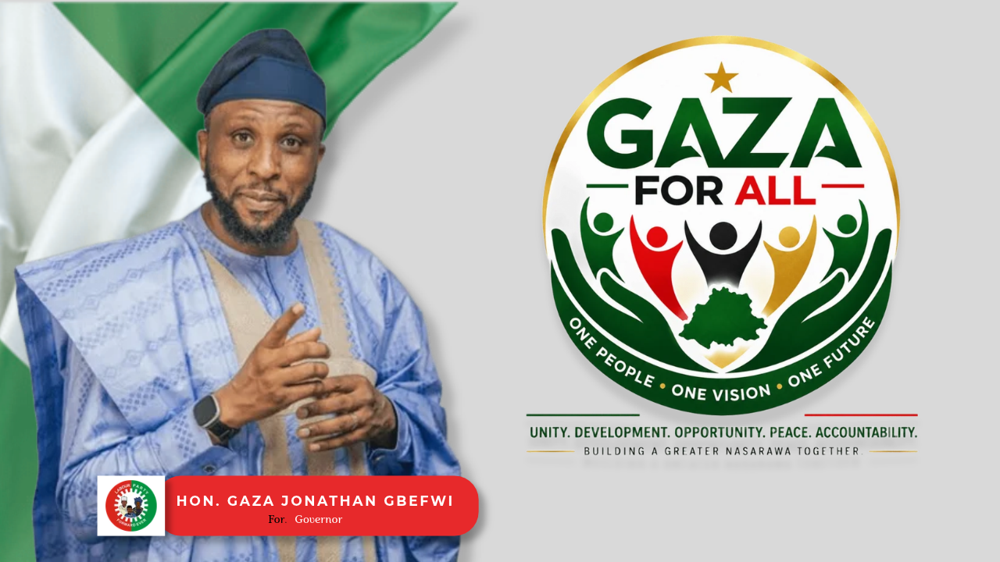

One people.
One vision.
One future.
Gaza For All is a civic-political movement committed to inclusive participation, responsible leadership and accountable governance in Nasarawa.
“Support is not surrender.”
A permanent civic institution, not a campaign
Gaza For All organizes citizens, carries their concerns, connects them to leadership, and holds that leadership to account — before, during and after any election.
Gaza For All supports Hon. Jonathan Gaza Gbefwi because our support is grounded in his record, character, leadership approach and commitment to an inclusive Nasarawa. We believe leadership should bring people together rather than exploit religion, ethnicity or other divisions. Our support is therefore based on principles and evidence — not blind loyalty.
Read our full story →
Hon. Jonathan Gaza Gbefwi — the leadership Gaza For All supports, and holds to the same standard it asks of every public office holder.
Everyone who contributes to Nasarawa deserves a voice in its future.
Not indigenes versus non-indigenes. Belonging, contribution, participation and a shared future — that is what “For All” means to us.
Support based on principles and evidence
Leadership & record
We look at what has been done, not only what is promised. See the record →
An inclusive approach
Leadership that brings people together across religion and ethnicity, rather than exploiting division.
Principles, not loyalty
Our support is conditional on conduct and delivery — and we say so publicly.
Three pillars
Inclusion
Everyone who contributes to Nasarawa deserves a voice in its future.
Participation
Citizens should not merely observe politics; they should participate responsibly.
Accountability
Support must never eliminate questions, evidence or public responsibility.
Movement. Voice. Bridge. Watchdog.
One institution, four responsibilities — each one active for as long as Gaza For All exists.
Organizes people around a shared civic purpose.
Represents community concerns to those in power.
Connects citizens, communities and political institutions.
Promotes accountability — including after office is won.
What Gaza For All does
Community Engagement
Listening to communities and documenting concerns.
Civic Participation
Encouraging informed and peaceful participation.
Volunteerism
Organizing citizens around constructive action.
Leadership Development
Developing responsible community leaders.
Partnerships
Working with organizations aligned with lawful, ethical objectives.
Events
Public meetings, orientations, forums and community activities.
Tell us what your community needs
A structured, private-by-default pathway to communicate concerns, priorities and ideas — from infrastructure and healthcare to education, security and inclusion.
How we hold leadership — and ourselves — to account
Our founding identity is One People, One Vision, One Future. Our mature accountability identity is We Support, We Question, We Account. Neither replaces the other.
See our approach →Latest from Gaza For All
[Approved update to be published]
Verified news and activity reports will appear here as they are approved for publication.
[Approved update to be published]
No content has been fabricated for this section.
[Approved update to be published]
Check back, or subscribe on the Contact page.
There is a place for you in this Movement
Service, competence and integrity
We ask more of leaders than proximity to power. Meet the people carrying this institution forward.
Meet our leadership →Whether Gaza wins or loses an election, Gaza For All remains.
A movement, a voice, a bridge, a watchdog — for as long as Nasarawa needs one.
Join Gaza For All